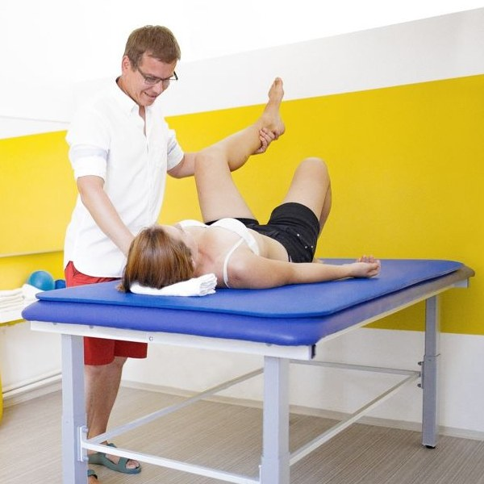

Záda, klouby
a návrat po úrazu
Bolest ze sedavé práce, přetížení, dlouhodobé potíže nebo rehabilitace po těžkém úrazu či operaci. Hledáme příčinu, ne jen místo, které bolí – a naučíme vás, jak si pomoct sami.

Jak to u nás probíhá
Od bolesti zpátky k pohybu
První návštěva
Vyslechneme a vyšetříme
Probereme, jak žijete – práci, odpočinek i pohyb – a podíváme se na držení těla v sedu, ve stoji i v pohybu.
Hned potom
Zmírníme bolest
Rehabilitačními technikami uvolníme akutní bolest a vysvětlíme vám, co se v těle děje.
Týdny
Cvičíte s námi i sami
Naučíme vás cílené cviky na doma, do práce i ven a poradíme s úpravou režimu a pracovního místa.
Dlouhodobě
Vracíme vás do pohybu
Doporučíme vhodný pohyb a sport. První efekt obvykle ucítíte už po pěti návštěvách.
akutní i chronické
Bolesti a dlouhodobé potíže
Potíže často vznikají z dlouhodobě nevhodného držení těla, přetížení nebo nedostatku pohybu. Vycházíme z neurofyziologie, vývojové kineziologie a manuální medicíny.
- bolesti zad a šíje
- bolesti kloubů – rameno, koleno, kyčel
- přetížení ze sedavé práce
- závratě a potíže s čelistním kloubem
po úrazu a operaci
Po těžkém úrazu
Máme zkušenosti ze spinální jednotky, traumatologie i neurologie. Cesta zpátky bývá dlouhá – jdeme ji s vámi krok za krokem.
- rehabilitace po operacích
- stavy po úrazech a zlomeninách
- neurologická onemocnění
- návrat do práce a běžného života
Kdo se o vás postará
Vyberte si, komu se svěříte


Adéla Večeřová
Ortopedie, úrazy a páteř · Vojenská nemocnice Brno
Klade důraz na kvalitu pohybu a na to, abyste své tělo v pohybu vnímali.
Uděláme první
krok spolu?
Individuální fyzioterapie dospělých stojí 1 400 Kč, návštěva trvá až 60 minut. Vezměte s sebou zprávy od lékaře, pokud je máte. Chcete začít přesným měřením? Vyberte si komplexní diagnostiku.